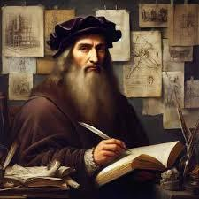
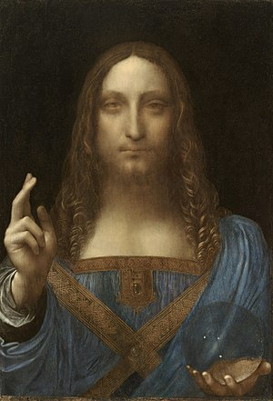
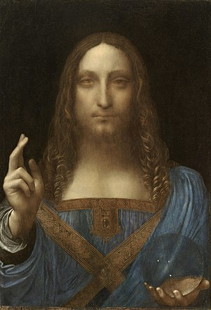
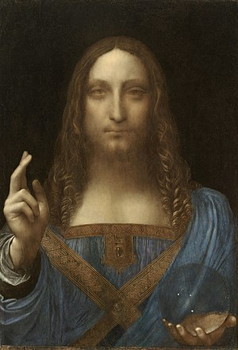
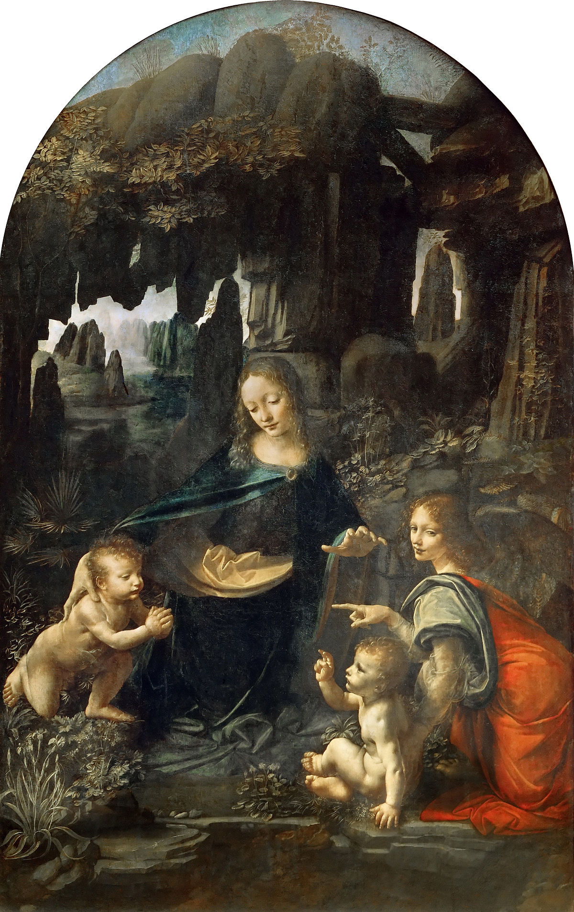
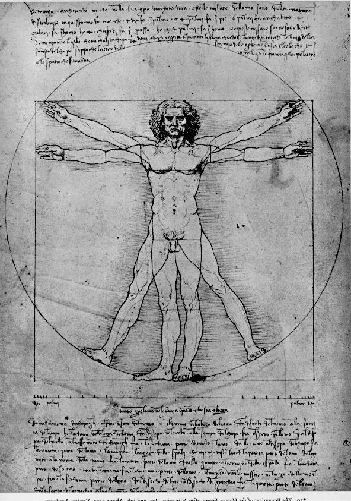
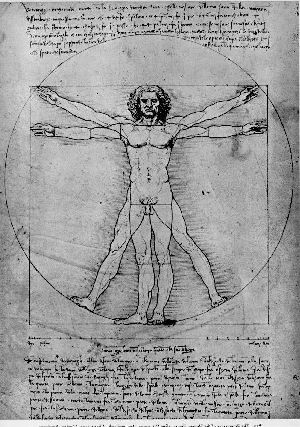

Leonardo da Vinci

 




 

Leonardo da Vinci and his famous paintings.
Here's a time line of Leonardo Da Vinci's life
- Born on 15th April 1452 in the Tuscan hill town of Vinci.
- His parents were not married at the time of his birth. They married separately the year after Vinci's birth.
- Leonardo had 12 half-siblings. Among whom the youngest was 40 years younger than him.
- Leonardo became an apprentice by the age of 17 and remained in training for seven years.
- Leonardo collaborated with Verrocchio on his The Baptism of Christ.
- At the age of 20, Leonardo qualified as a master in the Guild of Saint Luke, the guild of artists and doctors of medicine.
- In the present era, Mona Lisa (1503-1516) is arguably the most famous painting in the world. Which was a work of Vinci in the 16th century.
- Leonardo's studies in science and engineering are sometimes considered as impressive and innovative as his artistic work.
- Beyond friendship, Leonardo kept his private life secret.
- Leonardo died at Clos Lucé on 2 May 1519 at the age of 67.
You can learn more about Leonardo Da Vinci on his Wikipedia entry